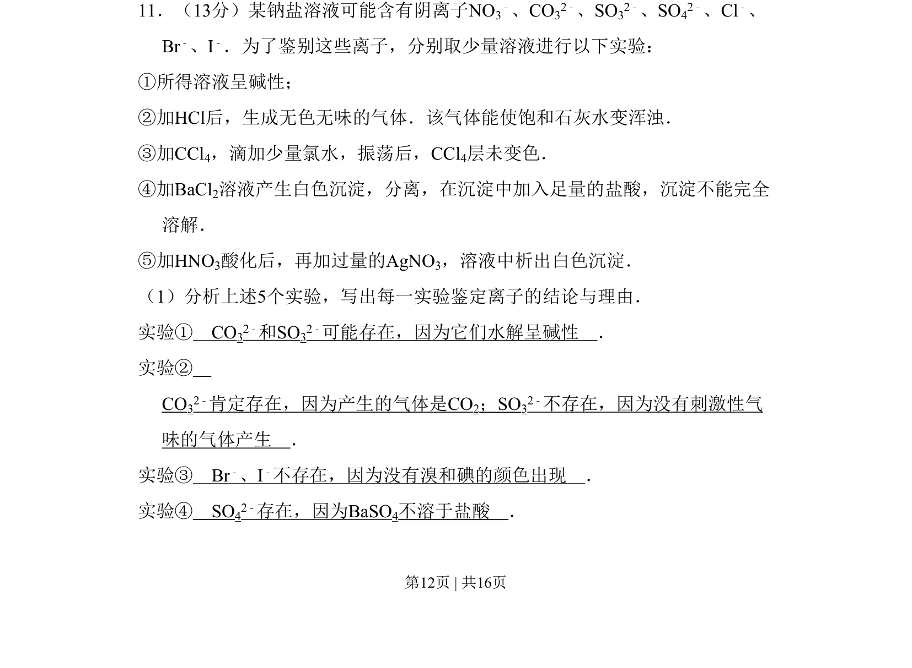
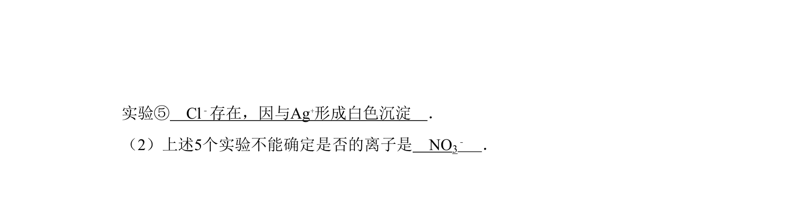
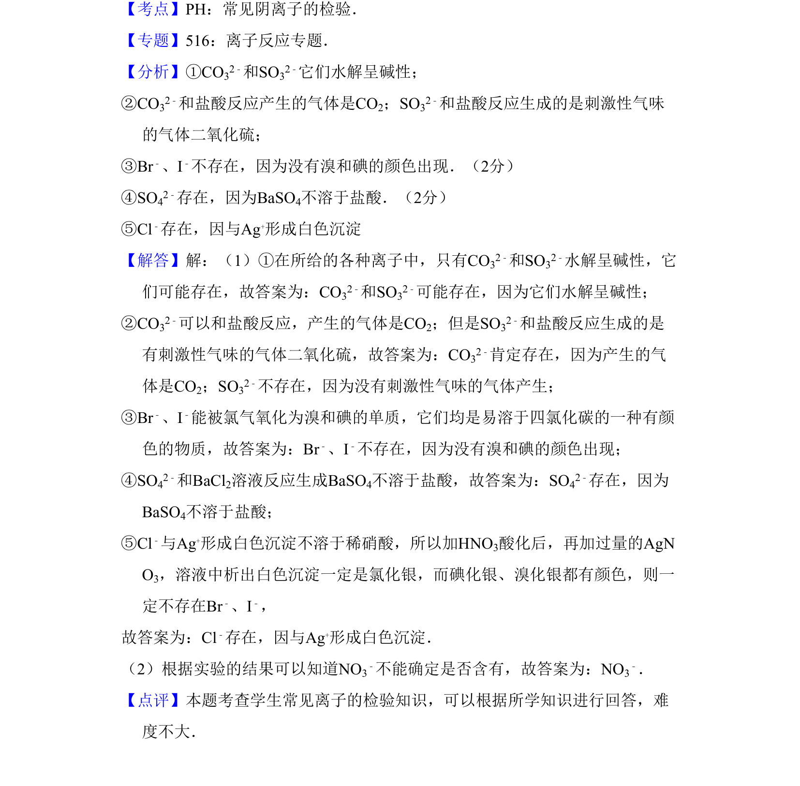

考点：离子共存 实验推理 化学鉴别


通过五个实验现象推断溶液中存在的阴离子种类。

📄 原 PDF 第 12 页：
素材/真题/吉林/2008-2024·（吉林）化学高考真题/2008年高考化学试卷（全国卷Ⅱ）（解析卷）.pdf
11．（13分）某钠盐溶液可能含有阴离子NO3 ﹣、CO32﹣、SO32﹣、SO42﹣、Cl﹣、 Br﹣、I﹣．为了鉴别这些离子，分别取少量溶液进行以下实验： ①所得溶液呈碱性； ②加HCl后，生成无色无味的气体．该气体能使饱和石灰水变浑浊． ③加CCl4，滴加少量氯水，振荡后，CCl4层未变色． ④加BaCl2溶液产生白色沉淀，分离，在沉淀中加入足量的盐酸，沉淀不能完全 溶解． ⑤加HNO3酸化后，再加过量的AgNO3，溶液中析出白色沉淀． （1）分析上述5个实验，写出每一实验鉴定离子的结论与理由． 实验① CO32﹣和SO32﹣可能存在，因为它们水解呈碱性 ． 实验② CO32﹣肯定存在，因为产生的气体是CO2；SO32﹣不存在，因为没有刺激性气 味的气体产生 ． 实验③ Br﹣、I﹣不存在，因为没有溴和碘的颜色出现 ． 实验④ SO42﹣存在，因为BaSO4不溶于盐酸 ．